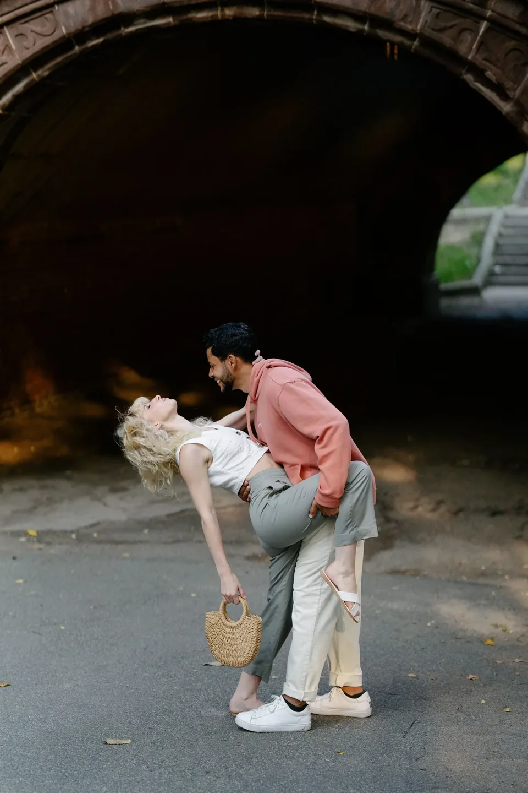

Somewhere between the unexpected and the unforgettable, we found each other. Now, surrounded by the people who made us who we are, we'd love to celebrate what comes next.
Not every love story begins with fireworks. Ours began with the smallest moments — a conversation that lasted too long, a familiar laugh, the comfort of being completely ourselves.
And every day since, we've chosen each other.
Even the greyest skies found their way to gold.
SCROLL TO LET THE LIGHT IN ↓Through every season, every new beginning, and every beautiful ordinary day.

Not posed. Not perfect. Just ours.
TAP A PHOTOGRAPH TO SEE IT CLOSELY
Saturday, 2027
Four o'clock in the afternoon
Garden Estate
Cape Winelands, South Africa
Soft neutrals and earth tones
Jackets encouraged
Please let us know whether you'll be joining us by 18 August 2027. We can't wait to celebrate together.
AMELIA & ETHAN · 18.09.2027